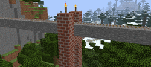
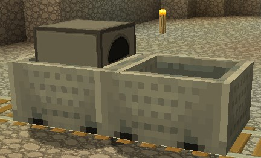
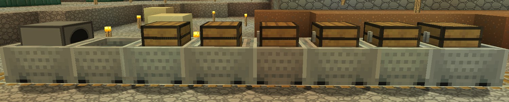
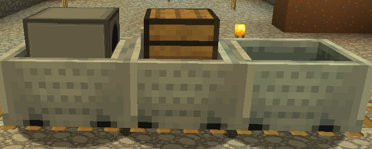

🚂 Trains
Trains brings fully functional train systems, allowing you to build and operate your own railways. With realistic physics and customizable train cars, you can create efficient transportation networks and enjoy the immersive experience of riding trains. From commuter systems to industrial freight networks, Trains offers you the opportunity to explore and expand world with the excitement of trains.

🎁 Features
- Ability to connect multiple carts together to form a train
- Integration with redstone circuits to control train movement and functionality
- Advanced pathfinding and routing capabilities for trains to follow designated tracks
- Compatibility with various transportation systems, such as rails, powered rails, and detector rails
- Implement a signaling system for trains, allowing players to set up signals and control the flow of traffic on their railway networks
- Introduce different types of train stations, such as passenger stations, freight depots, and maintenance facilities
- Add support for train schedules, allowing players to set specific departure and arrival times for their trains
- A wide range of customization options for creating and managing trains
- Support for different types of carts, such as passenger carts, cargo carts, and powered carts
- Sign-based Control: Utilize signs as a control mechanism to manipulate and interact with trains
📝 Guide
Trains can be operated in two ways: by powered rails or furnace minecarts. While the first option doesn't require fuel, it is quite expensive for long lines, whereas a furnace minecart requires 1 coal per approximately 1000 blocks.
Minecarts have a coupling mechanism where adjacent minecarts connect to form a train or truck. The number of minecarts in a coupling is limited.

You can assemble a freight train by using minecarts with chests.

If you place a minecart with a furnace in front of a chest minecart and put coal in it, the coal will be automatically taken from the chest, and the train will start moving.

⚙️ Sign-based Control
TODO
📜 Commands
- /train destination <destination> - Set the destination for a train.